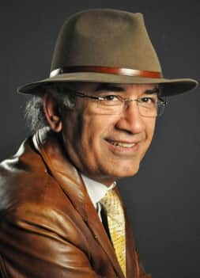

Fotoğraf: Melike Nur Büyük
Görüşmeler:
Tekin Ertuğ
Derleme:
Füsun Demiray,
Ebru Tekerek Ertuğ,
Selami Oral
Metin Yazımı:
Füsun Demiray
İlk Düzeltme:
Tekin Ertuğ
Son Düzeltme:
Hasip pektaş
Fotoğraf Sanatı Kurumu (FSK)
Tekin Ertuğ Atölyesi – 2011